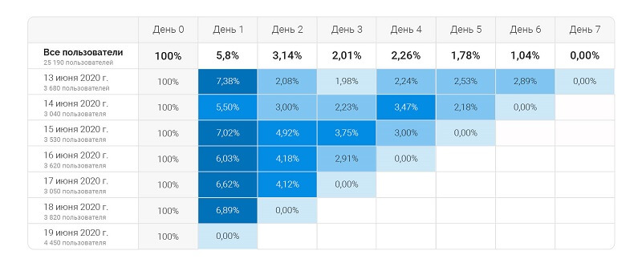
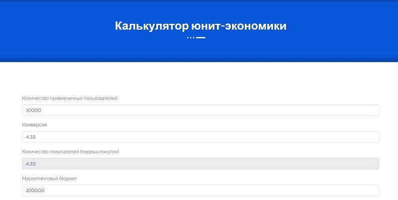
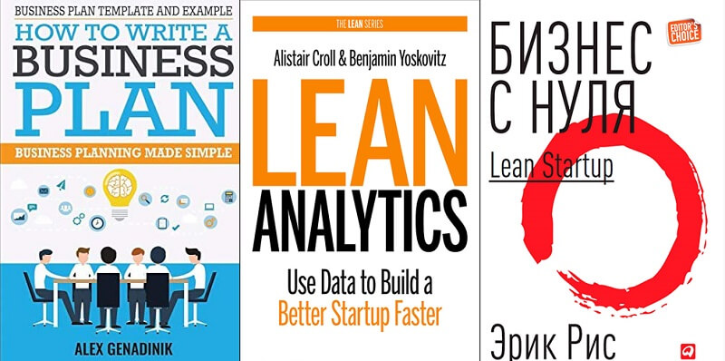
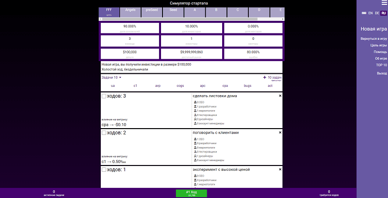

Ведение бизнеса по наитию встречается все реже. Большинство предпринимателей предпочитают не полагаться на интуицию, а использовать научные подходы, популярные методики, расчеты. Все это помогает грамотно масштабировать компанию и повышать прибыль. Юнит-экономика – один из способов просчитать экономические показатели.
Что такое юнит-экономика
Начать разбор определения юнит-экономики стоит с понятия «юнит».
Юнит – базовая единица, с продажи которой бизнес получает доход, и которую можно масштабировать. В каждой компании свой юнит. Общих правил по его определению не существует.
У производителя продукции unit – это единица изделия.
Фирма предоставляет услуги аутсорсинга, ее unit – человеко-час.
Компания предлагает юридические консультации бизнесу, unit – контракт.
Предприятие занимается продажами и ориентировано на постоянных покупателей, его unit – клиент.
Каждый отдельный бизнес необходимо рассматривать в разрезе специфики его деятельности в целом, чтобы правильно выбрать юнит.
Юнит-экономика позволяет методом расчета определять, сколько компания сможет зарабатывать или терять на одном юните.
История возникновения юнит-экономики
Существует несколько версий того, как появилась unit-экономика. По одной из них основателем метода стал инвестор из США Дэвид Скок. Инвестируя стартаперов, он хотел видеть конкретные цифры и бизнес-планы. Однако из-за новизны продуктов и услуг стартаперы не могли показать реальные данные и просто «рисовали» выдуманные цифры. Естественно, это не давало ответов на основные вопросы, волнующие инвесторов:
- сколько предстоит тратить на производство и реализацию единицы продукта;
- во сколько обойдется один клиент;
- какой доход будет давать продажа единицы продукта.
Разбираться с этими данными помогла юнит-экономика.
Развитие методологии
Появление юнит-экономики фиксируют в промежутке с 1995 по 2010 год, а в 2014-2015 годах метод получил очень широкое распространение в комплексе с когортным анализом. Последний позволяет формировать группы пользователей по конкретным признакам и анализировать их.

Благодаря когортному анализу unit-экономику получается рассчитывать напрямую для конкретной группы с помощью электронных таблиц, а также использовать множество метрик, чтобы вести расчет.
Зачем считать юнит-экономику
Ошибочно считается, что юнит-экономика нужна для получения «голых» цифр. На самом деле эта методика нужна бизнесмену, чтобы понимать, в каком направлении движется предприятие, и принять правильное решение относительно его будущего развития.
{kind=link}
Благодаря использованию методики становится понятно:
- будет ли прибылен стартап и каждый unit отдельно;
- приведет ли масштабирование бизнеса к росту прибыли;
- насколько эффективны основные каналы сбыта;
- сколько клиентов необходимо привлечь и в какую сумму обойдется каждый из них;
- перспективы и направления движения компании;
- точка безубыточности, прибыльность инвестиций;
- эффективность управления издержками;
- необходимость корректировать ассортимент по конкретным позициям.
Кому необходима юнит-экономика
- Инвесторам. Перед вложением денег нужно посмотреть, окупятся ли инвестиции и сколько получится заработать после запуска проекта.
- Стартапам. Пока предприятие не работает, сложно увидеть будущие показатели. Юнит-экономика помогает все спланировать, чтобы избежать риска быстро прогореть.
- Бизнесменам. Перед расширением важно просчитать, достаточно ли средств на содержание и поддержку большой компании.
- Перед началом крупных рекламных кампаний. Продвижение продукта может сказаться на его себестоимости в сторону увеличения. Необходимо выяснить, не приведет ли это повышение к убыткам.
Модели юнит-экономики
Применяется две модели юнит-экономики, каждая из которых позволяет просчитать доходы и издержки. Рассмотрим обе модели подробнее.
Транзакционная модель
Рассчитана на оффлайн-бизнес, в котором в качестве юнитов выступают товары или сделки. Главный критерий оценки – размер маржи.
Модель предполагает учет постоянных и переменных издержек на себестоимость продукции, ее продвижение, упаковку, доставку, зарплату персоналу, аренду помещения, прием оплаты и некоторые другие статьи.
Учитываются расходы только на проданные товары или услуги, а также только те из них, которые относятся к юниту. Доходы учитываются по факту реализации продукта, независимо от времени поступления на счет.
С помощью этого инструмента бизнесмен может оценить эффективность юнита и решить, стоит ли расширять компанию.
Клиентская модель
Юнитом выступает пользователь или клиент. Модель рассчитана как на оффлайн-бизнес, так и на компании, которые реализуют свои продукты через Интернет.
В зависимости от специфики продаж, юнитом может быть как фактический клиент, который уже заплатил (например, бизнес по продаже софта), так и просто новый пользователь (бесплатные мобильные приложения).
Главные критерии оценки – пожизненная ценность пользователя, стоимость привлечения и разница между ними.
Достоинства и недостатки юнит-экономики
Как и любой способ оценки эффективности бизнеса, юнит-экономика имеет плюсы и минусы.
|
Плюсы |
Минусы |
|
|
Этапы расчета юнит-экономики
В пособиях по unit-экономике можно найти многие формулы, термины и аббревиатуры. Однако они не универсальны: каждой бизнес-модели соответствует своя формула. Рассмотрим 4 основных этапа расчета, которые лежат в основе получения важной информации о состоянии бизнеса.
{kind=link}
1 этап. Определяем бизнес-юнит
Начинаем с правильного определения юнита. Здесь может быть два варианта:
- Юнит – это товар или услуга. В этой ситуации сравнивают прибыль от одной фактической продажи с переменными расходами на нее.
Пример. В ресторане юнитом будет любое блюдо из меню. Допустим, что себестоимость блюда – 150 рублей, а цена – 500 р. Как видно, себестоимость на 350 р. ниже выручки, в итоге ресторан работает в плюс.
- Юнит – это клиент. Модель предполагает расчет прибыли от клиента (LTV) и затрат на его привлечение (CAC). Затем сравнивают два полученных значения.
Пример. Компания зарабатывает 500 000 р. в месяц, имеет 200 клиентов.
LTV = 500 000 / 200 = 2 500 р. – приносит на деле каждый.
На рекламу было потрачено 80 000 р., удалось привлечь 120 новых клиентов.<САС = 80 000 / 120 = 667 р. – потрачено на клиента.
Теперь сравниваем цифры и видим, что прибыль с одного потребителя значительно больше, чем затраты на его привлечение. Значит, фирма работает в плюс.
2 этап. Считаем стоимость юнита
В юнит-экономике используется множество метрик, которые влияют на вычисление разных параметров.
- UA – привлеченные пользователи. Например, по рекламной ссылке из Яндекса на сайт пришло 200 человек (трафик) – это и есть UA независимо от того, какая часть из них купит товар, а какая сразу же покинет страницу.
- CR – конверсия. Например, из 200 человек на сайте 15 подписались на курс и оплатили заказ. Эти 15 человек или 7,5% и будут значением CR.
- AC – общие расходы на привлечение пользователей или маркетинговый бюджет.
- CPA – стоимость привлечения одного пользователя.
CPA = AC / UA
{kind=link}
Например, маркетинговый бюджет составил 100 000 р., на сайт онлайн-школы английского языка пришло 1 000 человек. В этом случае CPA составит 100 р. – именно столько компания тратит, чтобы привлечь очередного пользователя.
- CAC – стоимость привлечения одного клиента.
САС = Расходы на привлечение клиентов / Количество клиентов
Пример. На рекламу новой книги было потрачено 30 000 р., дополнительно 5 000 р. заплатили сторонним дизайнеру, 3 000 р. – копирайтеру, 8000 р. – таргетологу. Книгу купило 800 человек.
САС = (30 000 + 5 000 + 3 000 + 8 000) / 800 = 57,5 р.
{kind=link}
3 этап. Считаем доход с юнита и пользователя
Затраты на пользователя уже известны, теперь нужно узнать, какую прибыль он приносит. Сделать это помогают следующие метрики:
- APC – среднее количество покупок, которое совершает один клиент.
АРС = Количество покупок / Количество клиентов
{kind=link}
У магазина проф. материалов для художников 500 клиентов, которые сделали 2000 покупок. Каждый клиент совершает в среднем 4 покупки.
- AvP – средний чек.
AvP = Выручка / Количество покупок
Фирма продает двойные и тройные стеклопакеты по 10 000 р. и 20 000 р. соответственно. Предположим, что каждый вид стеклопакета был продан 50 раз.
AvP = 10 000 * 50 + 20 000 * 50 / 100 = 15 000 р. - COGS – себестоимость проданных товаров. Включает издержки только на их производство.
Компания продала 100 книг, на их выпуск было потрачено 10 000 р.
COGS = 10 000 * 100 = 1 000 000 р. - ARPC – средний доход, который приносит компании один покупатель.
ARPC = (AvP – COGS) * APC – 1COGS
{kind=link}
{kind=link}
{kind=link}
1COGS – дополнительные издержки на первую продажу. Они возникают, если компания предлагает новым клиентам дополнительные бонусы за свой счет.
Предположим, что у продавца деревянных дверей средний чек 500 000 р., себестоимость проданных товаров 80 000 р., а один клиент совершает в среднем 2 покупки. Дополнительные издержки отсутствуют.
ARPC = (500 000 – 80 000) * 2 – 0 = 840 000 р.
- ARPU – средний доход, который приносит один пользователь.
ARPU = ARPC * CR
Средний доход с одного человека составляет 2 000 р. Конверсия – 7%.
ARPU = 2 000 * 7% = 140 р.
{kind=link}
4 этап. Отвечаем на ключевые вопросы бизнеса
Наиболее важная метрика при оценке бизнеса – маржинальная прибыль. Она показывает заработок компании с продажи юнита, помогает понять, приносит ли реализация товаров или услуг прибыль, и рассчитывается по формуле:
{kind=link}
СМ = (ARPU – CPA) * UA
Например, фирма по продаже пластиковых окон получает средний доход с одного человека 10 000 р. На его поиск тратится 1 000 рублей, а всего в рамках рекламной кампании было привлечено 50 клиентов. Смотрим маржинальную прибыль компании:
CM = (10 000 – 1 000) * 50 = 450 000 р.
Чтобы понять, есть ли смысл продолжать вкладывать деньги в рекламную кампанию, нужно сопоставить стоимость поиска одного клиента со средним доходом, который он приносит бизнесу. Простыми словами, если затраты на привлечение ниже заработка, можно думать, что кампания убыточна.
Как быть, если бизнес работает в убыток или зарабатывает меньше, чем хотелось бы? В этом случае можно:
- по возможности снизить себестоимость продукта;
- увеличить средний чек;
- перестать использовать невыгодные рекламные каналы;
- снизить количество покупок на одного клиента.
Отслеживать показатели нужно в течение более-менее длительного периода. Анализ данных по непродолжительному отрезку времени может быть неточным.
Метрики unit-экономики с формулами
|
Метрика |
Расшифровка |
Значение |
Формула |
|
CAC |
Customer Acquisition Cost |
Стоимость привлечения одного клиента |
CAC = AC / В |
|
CPR |
Cost Per Registration |
Стоимость регистрации |
CPR = CPR / Количество регистраций с конкретного канала |
|
ARPC |
Average Revenue per Customer |
Средний доход на одного клиента |
ARPC = (AvP – COGS) * APC – 1COGS |
|
ARPU |
Average Revenue Per User |
Средний доход на одного пользователя |
ARPU = ARPC * С1 |
|
ARPU с учетом рекламы |
Average Revenue Per User |
Средний доход на одного пользователя с учетом затрат на рекламу |
ARPU с учетом рекламы = ARPU – СРА |
|
ARPPU |
Average Revenue Per Paying User |
Выручка от одного платящего пользователя |
ARPPU = ARPU / C1 |
|
ARPA |
Average Revenue Per Account |
Средняя выручка на зарегистрированного пользователя |
ARPA = R / Число учетных записей |
|
LTV |
LifeTime Value |
Суммарная прибыль с одного клиента |
LTV = Доход от одного клиента за весь период / (САС + ARC) |
|
APC |
Average Payment Count |
Среднее число покупок от одного покупателя |
APC = Среднее количество заказов / B |
|
CPA |
Cost Per Acquisition |
Стоимость привлечения одного пользователя |
CPA = AC / UA |
|
CV или С |
Conversion Rate |
Конверсия |
С = (В / Число посетителей) * 100% |
|
C1 |
Conversion to first purchase |
Конверсия в первую покупку |
С = (В, купившие впервые / Число посетителей) * 100% |
|
CM |
Contribution Margin |
Маржинальная прибыль |
CM = (ARPU – CAC) * UA |
|
UA |
User Acquisition |
Привлеченные пользователи |
- |
|
COGS |
Cost Of Good Sale |
Себестоимость проданного товара |
COGS = Сумма всех переменных затрат за период, кроме маркетинга |
|
1COGS (1sCOGS) |
First sale COGS |
Все затраты на первую покупку |
1COGS = Сумма дополнительных затрат при первой продаже |
|
Fix COGS |
|
Постоянные расходы бизнеса |
Fix COGS = Сумма постоянных затрат компании |
|
OE |
Operating Expenses |
Операционные расходы |
ОЕ = ОР за период / Деньги от продаж |
|
ARC |
Average Retention Cost |
Средние затраты на удержание клиента |
ARC = Бюджет на удержание посетителей / Число посетителей |
|
ACS |
Average Customer Service |
Средняя стоимость обслуживания клиента в месяц |
ACS = Общие расходы на обслуживание клиентов / В |
|
ACV |
Annual Contract Value |
Годовая стоимость контракта |
ACV = Полная стоимость контракта / Длительность контракта |
|
AOV |
Average Order Value |
Средняя стоимость заказа |
AOV = Общая сумма заказов / Число заказов |
|
MRR |
Monthly Recurring Revenue |
Регулярная выручка за месяц |
MRR = Сумма всех регулярно получаемых платежей |
|
ARR |
Annual Recurring Revenue |
Регулярная выручка за год |
ARR = MRR * 12 |
|
B |
Buyer |
Число клиентов |
В = UA * C1 |
|
AvP |
Average Price |
Средний чек |
AvP = R / Число заказов |
|
Margin |
- |
Прибыль |
Margin = (AvP – COGS) / AvP |
|
Profit |
- |
Чистая потоковая прибыль |
Profit = UA * (−CPA + ARPU * Margin) |
|
Profit final |
- |
Чистая потоковая прибыль без постоянных издержек |
Profit = UA * (−CPA + ARPU * Margin) – Fix COGS |
|
АС |
|
Рекламный или маркетинговый бюджет |
Сумма всех расходов на поиск клиентов |
|
R |
Revenue |
Выручка за период |
Сумма всех чеков |
Примеры расчета юнит-экономики
Расчет юнит-экономики может иметь различия в зависимости от того, какой бизнес перед нами: действующий или стартап. Рассмотрим кейсы с вычислениями для обоих вариантов.
Для интернет-магазина
Предположим, что интернет-магазин продает недорогую бытовую технику.
Для расчета нужно знать исходные значения:
- затраты, связанные с рекламной кампанией, – 200 000 р.;
- зарегистрировалось 200 человек;
- продажи за полгода – 10 млн р.;
- клиенты за полгода – 800 человек.
Рассчитаем основные метрики.
САС = 200 000 / 200 = 1 000 р. – потрачено на поиск одного клиента. Насколько это много или мало, зависит от того, какой товар он купил.
Технику покупают не часто, повторных покупок может не быть, поэтому LTV рассчитывать нет необходимости, он актуален для бизнеса, который поддерживает отношения с одними и теми же клиентами.
ARPU = 10 000 000 / 800 = 12 500 р. – средний чек с человека.
Поскольку интернет-магазин тратил деньги на рекламу, эти затраты тоже нужно учесть.
СРА = 200 000 / 200 = 1 000 р. – потрачено на привлечение одного пользователя, что соответствует затратам на поиск одного клиента, т. к. целевое действие – регистрация.
ARPU с учетом рекламы = 12 500 – 1 000 = 11 500 р. – средний чек с клиента с учетом рекламы.
Чтобы рассчитать маржинальный доход, учтем, что в месяц интернет-магазин привлекал примерно 135 человек. Значит,
СМ = 135 * 11 500 = 1 552 500 р. – месячный маржинальный доход интернет-магазина.
Для стартапа
Предположим, что вы запускаете приложение для подсчета калорий, функционал в котором будет доступен по подписке.
В первую очередь моделируют путь пользователя, начиная с момента знакомства с приложением. В нашему случае это:
- Скачивание и установка.
- Бесплатная версия.
- Платные расширения.
- Подписка.
Скачивают приложение в основном пользователи, пришедшие с платной рекламы на Фейсбук. Узнать, сколько точно стоит поиск пользователя, пока невозможно, т. к. проект не запущен. В этом случае обращаемся к бенчмаркам CPI. Данные по стоимости установки здесь сильно разнятся в зависимости от местоположения и сферы, поэтому важно анализировать только свою страну (Россия) и свою тему (фитнес) – около 100 р. Не забываем о погрешности, она может быть существенной.
Теперь рассчитаем конверсии для каждого этапа воронки, чтобы понять, сколько пользователей доходят до подписки. Фактических данных нет, поэтому снова обращаемся к бенчмаркам. Итак:
- после установки приложения к его бесплатному использованию переходит 80-90% пользователей;
- платной версией начинает пользоваться от 5 до 15% пользователей, в зависимости от стоимости, юзабилити приложения, целей людей и прочих факторов;
- после использования платной версии подписку покупает 25-40% юзеров.
Теперь можно посчитать конверсию из установок в покупку подписки путем перемножения всех значений. Возьмем усредненные цифры:
С = 85 * 10 * 30 = 2,5%.
Рассчитаем среднюю стоимость затрат на привлечение одного платящего клиента.
САС = 100 / 2,5% = 4 000 р. – такую сумму придется потратить, чтобы получить одного пользователя, который оплатит подписку.
Теперь нужно вычислить среднюю сумму выручки, которую один оплативший пользователь принесет за все время использования приложения. Для этого определим, сколько месяцев он будет покупать подписку. Здесь исходный параметр один – процент отписок. Узнать его можно из бенчмарок. В нашем сегменте это в среднем 30%.
Цикл жизни проекта = 1 / 30% = 3 месяца.
Определить цену подписки можно после анализа конкурентов в данном сегменте приложений. Пусть это значение будет в пределах 1 000-1 500 р. в месяц, а в год – 12 000-18 000 р. Теперь можно посчитать LTV.
LTV в месяц = 1 000 / 30% = 3 333 р.
LTV в год = 12 000 / 90% = 13 333 р.
Предположим, что доли подписчиков с месячной и годовой подписками разделились поровну. Пока неизвестно, какая длительность подписки будет более прибыльной, но позже это можно будет оптимизировать. Также нужно учесть комиссию площадки, где будет размещаться приложение. Так, на App Store это 30%. Теперь можно рассчитать общий доход с одного пользователя за все время.
LTV = (50 * 3 333 + 50 * 13 333) * (1 – 30%) = 583 310 р.
Чтобы понять, окупятся ли расходы на рекламное продвижение приложения, вычислим ROMI.
ROMI = (583 310 – 4 000) / 4 000 * 100% = 14 483%
Результат говорит о том, что каждый рубль, вложенный в проект, принесет 14,5 рублей прибыли. Очевидно, что показатель рентабельности затрат высокий, а стартап достоин вложений.
Шаблон расчета юнит-экономики
Расчет множества параметров вручную – это долго, трудоемко. Легко запутаться в значениях, допустить ошибку. Для удобства и повышения точности вычислений используют шаблоны.
Excel-шаблон
{kind=link}
Представляет собой простую таблицу с прописанными формулами, которые автоматически считают значения на основании предоставленных данных.
Шаблон по методу Ильи Красинского
{kind=link}
Более сложный шаблон разработал известный эксперт по юнит-экономике Илья Красинский на базе своей методики расчета. В нем даются пояснения к ряду англоязычных метрик.
Калькулятор расчета юнит-экономики

Для вашего удобства мы разработали онлайн-калькулятор юнит-экономики, который помогает быстро рассчитать основные метрики любому члену вашей команды. Достаточно в нужных местах прописать соответствующие значения.
Сегментирование пользователей при расчете юнит-экономики
Для получения более точных цифр, выявления наиболее эффективных каналов связи с ЦА и самых ценных клиентов проводится сегментация пользователей.
Пример.
Компания потратила на контекстную рекламу 50 000 р., получила 380 лидов, из которых пользователями стали 120 человек. На таргетинг было потрачено 25 000 р, получено 240 лидов и 90 клиентов.
Выясним, насколько эти каналы эффективны.
- Контекстная реклама. 50 000 / 380 = 132 р.
Конверсия в клиента = 120 / 380 * 100 = 31,5%.
Цена одного клиента = 132 / 31,5% = 419 р. - Таргетинговая реклама. 25 000 / 240 = 104 р.
Конверсия в клиента = 90 / 240 * 100% = 37,5%.
Цена привлечения одного клиента = 104 / 37,5% = 277 р.
Так, компании выгоднее использовать таргетинговую рекламу для продвижения, поскольку ее конверсия на 6% выше конверсии контекстной рекламы.
Как сделать юнит-экономику более эффективной и простой
{kind=link}
- Используйте калькуляторы. Готовый онлайн-сервис может сильно облегчить процесс расчетов. Менеджеру достаточно ввести исходные значения, и калькулятор вычислит необходимые показатели.
- Разделяйте каналы. На рекламные кампании уходит много денег, поэтому эффективнее проводить расчеты для каждого канала отдельно, чтобы оценивать их работу.
- Группируйте продукты. Это помогает отслеживать эффективность продаж конкретной группы товаров и грамотно комплектовать ассортимент.
- Отслеживайте конверсии. Благодаря правильной оценке эффективности можно экономить бюджет, привлекать больше реальных потребителей, в т. ч. из поиска.
Особенности юнит-экономики
Существует несколько моментов, которые стоит учитывать в расчете unit-экономики, чтобы получать достоверные и точные цифры.
- Сервисы-помощники. Это таблицы авторасчета, онлайн-сервисы, калькуляторы, которые облегчают процесс вычисления.
- Срок окупаемости. Его стоит рассчитать даже в том случае, если по первоначальным расчетам бизнес убыточен.
- Разница между стоимостью одного пользователя и LVT. Последний должен быть больше в 3 раза, чтобы расходы окупились, а бюджета хватило для получения прибыли и расширения компании.
- Точные цифры по каждому значению. Только так можно получить актуальные данные.
- Только проданные товары/услуги. Необходимо учитывать доходы и издержки только по тем продуктам, которые были реализованы в периоде.
- Когорты клиентов. Для разных отрезков времени могут быть разные показатели unit-экономики по каждой когорте.
- Только то, что касается юнита. Другие доходы, расходы, ресурсы, материалы не учитываются.
- Реализация. В периоде учитывается именно реализация, а не денежные потоки.
Ошибки при расчете юнит-экономики
{kind=link}
- Расчет unit-экономики и доходов для всего бизнеса.
- Вычисления без учета стоимости привлечения клиента.
- Вычисления без учета затрат на эквайринг.
- Задействование не всех бизнес-показателей.
- Не разделение расходов на переменные и постоянные, учет постоянных затрат в расчетах.
- Использование абсолютных значений.
- Расчеты без демонстрации результатов кому-либо из экспертов.
Ответы на вопросы
Рассмотрим моменты, которые чаще других интересуют бизнесменов и стартаперов при изучении юнит-экономики.
Лучший вариант – получить и проанализировать первые реальные цифры путем выпуска, реализации пилотной партии товаров или бета-версии продукта.
Нежелательно. Результаты могут оказаться некорректными, поскольку нет гарантии, что прогнозируемые показатели станут реальными.
Источником реальных цифр может стать финансовый отдел компании, а также корпоративная CRM, сервисы аналитики, складского учета, рекламный кабинет.
Погрешность всегда может быть. Важно не получить конкретные цифры, а отследить основные тенденции для принятия правильного решения.
Период расчета определяется для конкретного бизнеса или стартапа индивидуально. Он может быть равен году, 6 месяцам, 3 месяцам, 1 месяцу, 1 неделе и даже 1 дню. Решающим выступает число продаж в месяц.
Для более корректного расчета клиентов нужно разделить на когорты, сегменты, группы, а затем проводить вычисления. Важны не конкретные цифры, а понимание, приносит юнит прибыль или убыток.
Ни то, ни другое. Это лишь метод расчета, с помощью которого можно получить дополнительные данные для анализа эффективности бизнеса и принятия решения.
Это разные вещи. Однако модель «юнит-товар» предполагает вычисление маржинальной прибыли как главной метрики.
Да, например, на больших торговых предприятиях юнитом может выступать как товар, так и клиент. Однако это более актуально для бизнеса, который планирует расширение, выводит на рынок новый продукт, а также для стартапов.
Существенно облегчает эту задачу онлайн-калькулятор, специализированные интернет-сервисы и электронные таблицы.
В этом поможет сегментация. Оценивать полученные значения нужно отдельно по каждой когорте или рекламному каналу.
Можно сгруппировать продукты по определенным признакам, но лучше рассчитывать юнит-экономику отдельно для каждого продукта.
Для начала стоит изменить одну из метрик. Это поможет проследить, как изменение отразится на прибыли.
Полезные материалы по юнит-экономике
Если вы планируете читать и расширять знания, предлагаем ряд полезных материалов.
- Книги: «Business Plan Template And Example: How To Write A Business Plan: Business Planning Made Simple», «Lean Analytics: Use Data to Build a Better Startup Faster», «Бизнес с нуля. Метод Lean Startup для быстрого тестирования идей и выбора бизнес-модели».
- Симулятор стартапа от Даниила Ханина. Нужно ввести исходные данные и делать ходы. По мере изменения метрик, можно отследить, как меняется итоговый результат.
- Бот от Ильи Красинского. Делает рассылку с новостями, обучающими материалами и тренировочными заданиями для лучшего понимания особенностей юнит-экономики.
- Карта unit-экономики от Binary District. Наглядно отображает связи между разными метриками с помощью формул.



{kind=link}
Заключение
Юнит-экономика позволяет оценить устойчивость бизнеса и целесообразность его расширения. В процессе расчетов важно понять, компания зарабатывает на одном юните или несет убытки. Также вычисления можно использовать для планирования. В этом случае удовлетворительные показатели говорят о том, что бизнес можно масштабировать и получить больше прибыли.
Оставить комментарий
Войти с помощью